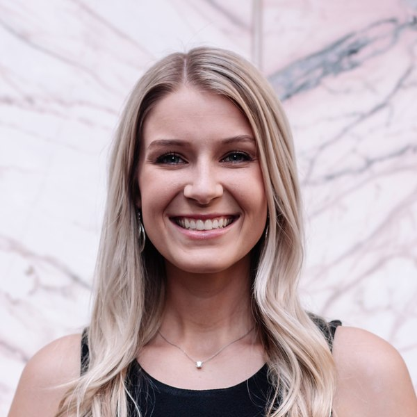
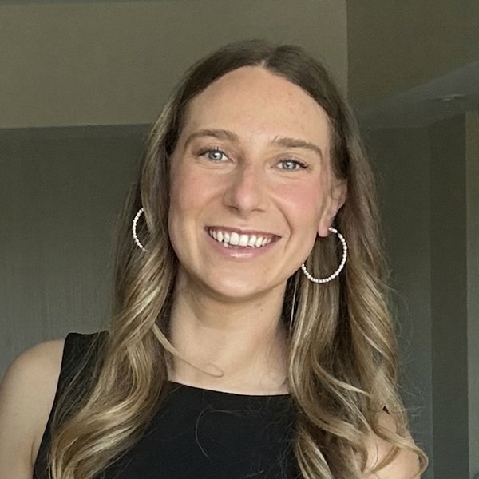

<!-- Scholars Section -->
<section id="scholars" class="section">
    <div class="container">
        <div class="section-header">
            <h2>Our Scholars</h2>
            <p class="section-subtitle">Meet our scholarship recipients — nurses pursuing NNP degrees with our support</p>
        </div>

        <h3 class="cohort-year">2026 Recipients</h3>
        <div class="scholars-grid">
            <div class="scholar-card">
                
                <h3>Cheyenne Galloway</h3>
                <p class="scholar-program">University of Alabama at Birmingham</p>
                <p>Cheyenne Galloway is a neonatal nurse at Children's Healthcare of Atlanta, where she cares for
                    critically ill newborns in a Level IV NICU. She chairs the hospital's Resuscitation Council and
                    has been active in its Customer Service Council, advocating for improvements to the patient and
                    family experience. She is currently pursuing her Neonatal Nurse Practitioner (NNP) degree at
                    the University of Alabama at Birmingham, beginning this fall with an anticipated graduation in
                    Fall 2028. Outside of nursing, Cheyenne enjoys traveling with her husband and their dachshund,
                    and dabbling in photography.</p>
            </div>
            <div class="scholar-card">
                
                <h3>Jasmine Sanders</h3>
                <p class="scholar-program">University of South Alabama</p>
                <p>Jasmine Sanders began her nursing career in the NICU at Emory Midtown as a patient care
                    assistant before becoming a registered nurse in the same unit, where this November she will mark
                    four years. After a strong first year with her intermediate care preceptor, she moved into the
                    intensive care nursery and kept building on those fundamentals. She has
                    since become a preceptor herself and currently serves on the unit's skin committee. She is
                    currently pursuing her Neonatal Nurse Practitioner (NNP) degree at the University of South
                    Alabama. Outside of work, Jasmine enjoys paint-by-number art and has been playing piano by ear
                    since she was five years old.</p>
            </div>
            <div class="scholar-card">
                
                <h3>Danielle Schroeder</h3>
                <p class="scholar-program">Emory University</p>
                <p>Danielle Schroeder has worked as a NICU nurse since 2017, gaining experience at hospitals
                    across the country, including Northwestern Memorial in Chicago, Brigham and Women's in Boston,
                    Providence St. John's in Santa Monica, and Morgan Stanley Children's Hospital in New York.
                    She now serves as Grady's
                    NICU Discharge Nurse Coordinator, guiding families through the transition from the intensive
                    care environment to home and managing the complex care coordination that keeps fragile newborns
                    safe after discharge. She is currently pursuing her Neonatal Nurse Practitioner (NNP) degree at
                    Emory University, with an anticipated graduation in December 2027. Outside of work, Danielle
                    loves spending time outdoors, playing and teaching mahjong, and spoiling her three-year-old
                    nephew.</p>
            </div>
        </div>
    </div>
</section>
